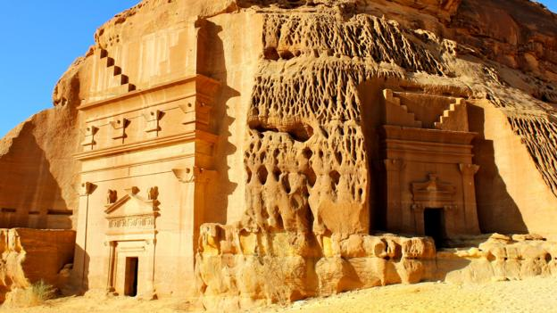
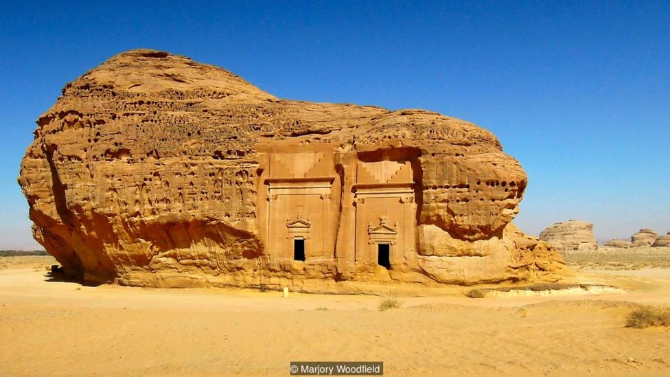
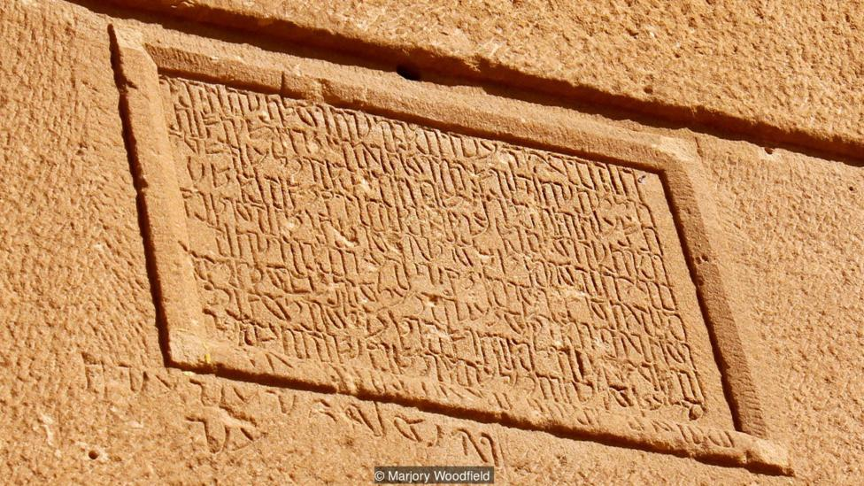
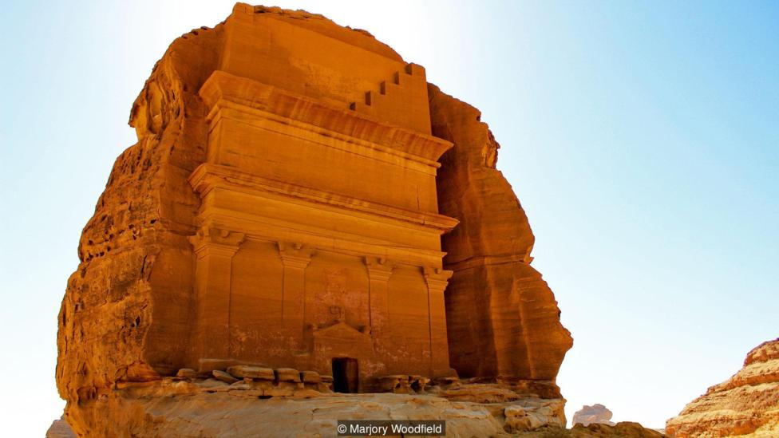
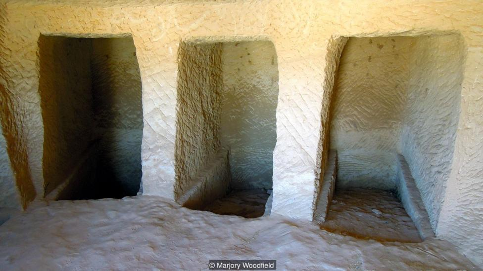

A Silent City Hidden in the Desert

Madain Saleh isn’t as well-known as Petra, but the Nabateans’ second-largest city played a crucial role in their mysterious empire.
As always, our Saudia Airline flight from Riyadh to Medina started with prayer.
“Ladies and gentlemen,” the flight attendant said over the intercom. “The text that you are about to hear is a supplication that the prophet Mohammed, peace be upon him, used to pray before travelling.”
The rest was in Arabic. I listened to the record voice, low and ponderous, as I looked out the small window at the unending desert below. I was travelling with friends to Saudi Arabia’s hidden desert city of Madain Saleh. While many people have heard of Nabatean capital Petra in Jordan, Madain Saleh, the Nabateans’ second-largest city and a Unesco World Heritage Site, remains relatively unknown. Once a thriving city along the ancient spice route, it played a crucial role in building a trade empire. But today its monumental stone-hewn tombs are some of the last, and best preserved, remains of a lost kingdom.
From Medina, we drove four hours to the oasis town of Al Ula, and then continued a little ways further to our hotel in Saudi Arabia’s Hejaz province, 1,043km northwest of Riyadh. Our guide Ahmed met us next morning after breakfast. He was tall, lightly bearded and wore a traditional Arabic thobe (robe) and red ghutra (head scarf). Smiling, he told us that he learned his English in New Zealand.
As we drove roughly 40km north of the hotel towards Madain Saleh, Ahmed told us about the Nabateans, whose wealth and prosperity came from their ability to source and store water in harsh desert environments. They also held a monopoly on desert trade routes as far southwest as Madain Saleh and north to the Mediterranean port of Gaza. They extracted taxes from camel caravans – laden with frankincense, myrrh and spices – that stopped at their garrisoned outposts for water and rest.
However, in 106 AD, the Nabatean Empire was annexed by the Romans, and Red Sea routes overtook land trading routes. Nabatean cities were no longer centres of trade, and so began their decline and ultimate abandonment.
Tucked away in the desert, today Madain Saleh is deserted, silent and stunningly well-preserved. Much of the city still lies under layers of sand.
What has been uncovered is a vast necropolis of more than 131 immense tombs. At first, their sheer scale and number was overwhelming. But as we looked closer, the Nabateans' artistry was revealed through carvings of soaring eagles, imposing sphinxes and feathered griffins, not to mention intricate inscriptions. We stopped in front of one tomb, whose inscription translated as being for ‘Hany son of Tansy… and descendants’, and ended with a date and name: ‘April 31AD… carved by Hoor… the sculptor’.
Tomb inscriptions provided insight into the names, relationships, occupations, laws and gods of the people who lived here. The Nabateans left no extensive written history, so these texts, unique to Madain Saleh, are extraordinarily valuable. Ahmed explained that the inscriptions were written in Aramaic, an ancient Semitic language and the lingua franca of the Middle East at that time. Aramaic would have been essential knowledge for business and commerce communication, although the Nabateans also used an early form of Arabic – traces of which Ahmed pointed out in the inscriptions.
Of all the tombs, Qasr al Farid was particularly impressive – principally for its size because the façade was relatively simple. A central door with a decorated pediment was the entry to the interior, where bodies would have been laid in recessed shelves along the walls.
From Qasr al Farid, the views of the rock-hewn desert presented their own extraordinary drama. Golden sandstone outcrops rose from a flat sandy floor, sculpted into crooked spires and conical structures by centuries of wind and rain. And the silence was overwhelming. Looking out from a tomb interior, it was only our footprints and van tyre marks that disturbed the stillness.
Unlike Petra with its tourists, souvenir sellers and donkey rides, there were no other people here. Muslims will not come here because they believe the site was cursed when the Nabatean’s refused to renounce their gods in favour of Islam, and tourist visas for non-Muslims to enter Saudi Arabia are notoriously difficult to obtain. It’s the very absence of foot traffic, as well as Saudi Arabia’s dry desert climate, that’s has kept Madain Saleh so intact. While Petra’s facades are slowly disintegrating, these tombs are stunningly well preserved.
We wandered the necropolis at will, peering in and out of tombs, touching the cold, age-old stone and losing sense of time. A few hours later we climbed back into our van and headed northeast to Jabal Ithlib, a monumental rocky outcrop believed to have been a religious sanctuary for the worship of the Nabatean god Dushara, Lord of the Mountains.
The jagged cliff walls of the siq, a narrow, 40m-long natural passageway that led to Jabal Ithlib, had decorated votive niches to Nabatean gods carved into the rock and petroglyphs of camels and traders. Ahmed pointed to a series of canals that once channelled water into cisterns – examples of the Nabatean ability to manipulate rain run-off and underground aquifers.
We set out along Jebel Ithlib’s southeastern slope, climbing Mount Ethleb. Dressed as I was in the mandatory head-to-toe black abaya (cloak) this was something of a challenge. My undignified scramble to the summit was well worth it, however. We faced west across a vast plain, and I imagined traders and camels approaching Madain Saleh, their panniers full of frankincense. These resinous nuggets, extracted from the Boswellia sacra tree, are as valuable as they are rare. They would have been destined for the wealthiest Romans, Greeks, Egyptians and Israelites.
As the sun dipped below the horizon, we drove back towards the outskirts of the ancient city, stopping by a cluster of tombs. We spread brightly patterned carpets on the sand, drank Arabic coffee and passed around traditional date-filled mammoul biscuits. In front of us, Madain Saleh’s sandstone tombs glowed gold with the last remnants of sun. The silence hung around us like a thick blanket as we watched the desert colours slowly fade into darkness.
Subscribe to our newsletter for free